- 전이학습 = 이미 학습된 모델의 Backbone(특징 뽑는 부분)을 빌려 오고, 우리 문제용 Head(분류기)만 새로 학습한 뒤, 필요하면 Head-only → Partial → Full 순서로 층을 연다.
- 데이터가 불균형하면 Accuracy는 실패를 가린다 → Macro F1과 클래스별 Recall·support, Confusion Matrix, 오류 이미지를 같이 본다.
- Grad-CAM은 "모델이 어디에 반응했나"를 보여 주는 단서일 뿐 원인을 확정하지 않는다. 비교 조건과 설정을 기록해야 결과를 설명할 수 있다.
본문에는 핵심 코드 한두 줄만 남겼어요.
📦 필요한 패키지
| 패키지 (pip 이름) | 뭐 하는 애? | 코드에서 |
|---|---|---|
torch, torchvision | 모델·학습 엔진 / 사전학습 모델(ResNet18)·ImageFolder·transforms | import torch, from torchvision.models import resnet18 |
scikit-learn | Confusion Matrix, F1, 분류 보고서, 그룹 단위 분할 | from sklearn.metrics import f1_score |
numpy | 숫자 배열 계산 | import numpy as np |
Pillow | 이미지 파일 열기 (ImageFolder가 내부에서 씀) | from PIL import Image |
opencv-python | 이미지 읽기·저장, Heatmap 겹쳐 그리기 (Day13 전처리 연결) | import cv2 |
🔧 설치 · 확인
python -m pip install torch torchvision scikit-learn opencv-python Pillow numpy
python -c "import torch, torchvision, sklearn, cv2; print(torch.__version__, torchvision.__version__, sklearn.__version__, cv2.__version__)"
python -c "import torch; print(torch.cuda.is_available())" # True면 GPU 사용 가능
device = "cuda" if torch.cuda.is_available() else "cpu" # 선택한 device를 기록scikit-learn → sklearn, opencv-python → cv2, Pillow → PIL. torch와 torchvision은 서로 짝이 맞는 버전이어야 해서 함께 설치해요.weights=None(무작위 가중치)으로 조용히 바꾸지 않습니다. 🤔 왜? — 무작위 가중치는 "전이학습"이 아니라서, 결과가 나빠져도 그 이유를 엉뚱하게 해석하게 돼요. 그리고 출처를 믿을 수 없는 checkpoint는 torch.load 하지 않아요(파일 안의 코드가 실행될 수 있어서).이거 어디에 써?
Day13까지는 이미지를 처리하는 코드를 다뤘어요. 오늘은 이미지를 분류하는 모델을 만들고, 틀린 사례를 분석해서 다음에 뭘 고칠지 정하는 법을 배워요.
+ 새 Head→ 학습 범위 선택→ 불균형 대응→ 지표 · 오류 이미지→ Grad-CAM→ 다음 실험 가설
- train으로만 배우고, valid로만 고르고, test는 마지막 확인용으로 남긴다.
- 비교할 때는 한 번에 하나만 바꾸고 나머지 조건은 같게 둔다.
- 오답이 없으면 "0건"이라고 쓰고, Grad-CAM은 원인이 아니라 단서로 쓴다.
① 데이터셋 설계 — 라벨과 분할을 믿을 수 있나?
좋은 모델은 데이터셋 설계에서 시작해요. 한 장의 이미지에는 이미지 경로·고유 ID · 정답 클래스 · 출처(그룹 ID) · 분할(train/valid/test) 정보가 함께 있어야 하고, 모델 쪽에는 색 순서(RGB) · 입력 크기 · 값 범위/Normalize · 증강 허용 범위라는 입력 계약이 있어요.
ImageFolder — 폴더 이름이 곧 라벨
data/
├─ train/
│ ├─ circle/ *.png
│ ├─ square/ *.png
│ └─ triangle/ *.png
├─ valid/ (같은 클래스 폴더 3개)
└─ test/ (같은 클래스 폴더 3개)ImageFolder는 클래스 폴더 이름을 정렬해서 0, 1, 2 번호를 붙여요 → {'circle': 0, 'square': 1, 'triangle': 2}. 그래서 폴더 이름을 바꾸면 라벨 번호가 바뀝니다(라벨 계약 변경).
Triangle) 번호가 어긋나 모델은 맞혔는데 채점은 틀린 일이 생겨요. 그래서 분할마다 매핑을 비교해요.데이터 누수 (Leakage)
같은 사진(또는 거의 같은 장면)이 train과 test에 동시에 들어가면, 모델이 "외운 걸" 시험 보는 셈이라 점수가 부풀려져요.
| 상황 | 분할 단위 | 🤔 왜? |
|---|---|---|
| 독립 상품 사진 | 이미지 단위 | 각 촬영이 서로 독립이면 그냥 나눠도 됨 |
| 환자·사람 사진 | 사람/환자 ID | 같은 사람 특징이 test로 새는 것 방지 |
| 영상 Frame | 영상 또는 장면 ID | 옆 프레임끼리 거의 똑같음 → 프레임 단위 분할 금지 |
| 증강 이미지 | 원본 ID | 증강본은 원본과 거의 같은 사진이라, 갈라지면 test에 "답"이 새어 들어감 |
ImageFolder() 명령어 사전에서 자세히 →train = ImageFolder("data/train")
print(train.class_to_idx) # {'circle': 0, 'square': 1, 'triangle': 2}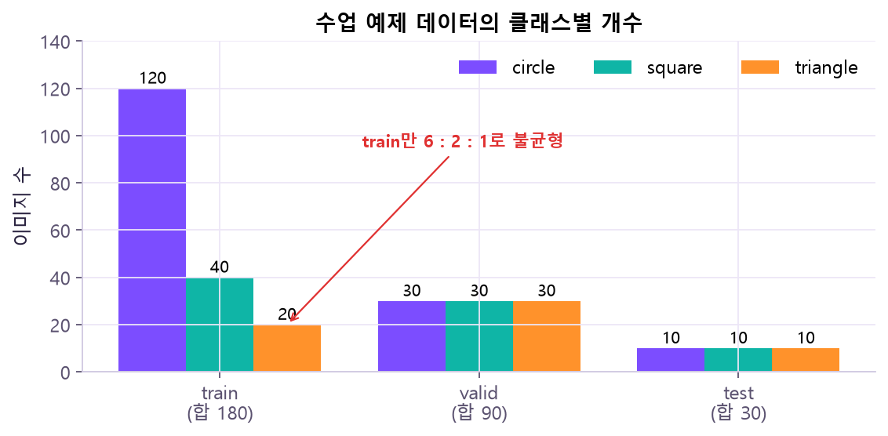
Counter(targets)로 분할마다 개수를 먼저 확인해요.GroupShuffleSplit) 명령어 사전에서 자세히 →gss = GroupShuffleSplit(n_splits=1, test_size=0.25, random_state=42)
tr_idx, va_idx = next(gss.split(rows, groups=rows.group_id)) # 같은 group_id는 한쪽에만② Backbone과 Head — 무엇을 빌려 오고, 무엇을 새로 만드나?
Batch→ Backbone (빌려 옴)
특징 추출 · 풀링→ 특징 벡터
ResNet18은 512개→ 새 Head (새로 학습)
Linear(512, 3)→ 클래스 점수
Logit 3개
Backbone은 가장자리·질감·형태처럼 여러 이미지 문제에서 다시 쓸 수 있는 특징을 만들어요. Head는 그 특징을 오늘 우리 클래스 수에 맞는 점수(Logit)로 바꾸는 마지막 층이에요.
fc)는 ImageNet 1000개 클래스 점수를 내도록 학습돼 있어요. 우리는 3클래스라 출력 개수부터 맞지 않고, "1000개 중 몇 번"이라는 의미도 우리 문제와 무관해요. 반면 Backbone이 뽑는 모서리·질감 같은 특징은 어느 문제에나 쓸모가 있어서 그대로 빌려 와요.Head의 학습 파라미터 수 = 특징 수 × 클래스 수 + bias
nn.Linear(512, 3)
weight [3, 512] → 1,536개
bias [3] → 3개
합계 = 512 × 3 + 3 = 1,539개 ← 특징 512개를 Weight로 조합하고 Bias를 더해 클래스 점수 3개얼리는 스위치는 두 개!
| 스위치 | 무엇을 고정? | 주의 |
|---|---|---|
requires_grad = False | 가중치. gradient를 계산하지 않아 학습이 이 숫자를 못 바꿈 | 순전파 계산은 그대로 함 |
| Optimizer에 넘기는 목록 | 실제로 갱신되는 파라미터 | 열었어도 목록에 없으면 안 바뀜 |
model.eval() / train() | BatchNorm 기억값(평균·분산)과 Dropout 동작 | 얼려도 train() 모드면 BN 기억값은 계속 바뀜 |
requires_grad=False로 가중치를 얼려도 train 모드면 BN 기억값은 우리 데이터 쪽으로 바뀌어요. 완전히 고정하려면 Backbone을 eval 모드로 둘지 정책을 정하고 기록해요.model = resnet18(weights=weights) # ① 학습된 가중치 불러오기
model.fc = nn.Linear(in_features, num_classes) # ③ 새 Head (새로 만든 층은 기본으로 학습 가능)trainable = sum(p.numel() for p in model.parameters() if p.requires_grad)
total = sum(p.numel() for p in model.parameters())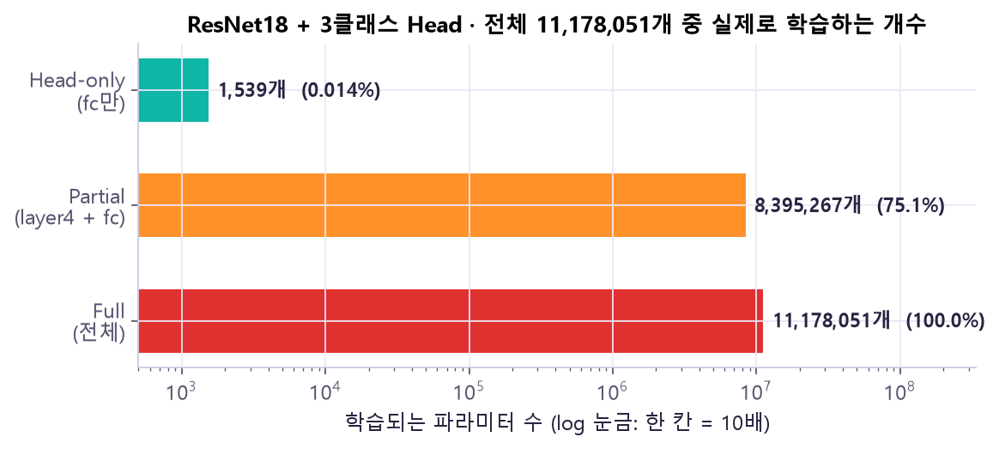
③ Fine-tuning — 어디까지 다시 학습시킬까?
| 전략 | 앞쪽 Backbone | 마지막 Stage (layer4) | 새 Head | 특징 |
|---|---|---|---|---|
| Head-only | 🔒 고정 | 🔒 고정 | 학습 | 빠르고 안정적, 학습 파라미터·VRAM 적음. 작은 데이터·비슷한 분야의 첫 기준선 |
| Partial | 🔒 고정 | 학습 | 학습 | 마지막 층만 살짝 조정 |
| Full | 학습 | 학습 | 학습 | 연산 많고 과적합 위험. 분야 차이가 클 때 검토 |
requires_grad=True + Optimizer 목록에 들어가 값이 바뀌고, 🔒 칸은 순전파만 하고 그대로예요. 열리는 순서는 항상 위(출력 쪽)부터 아래로. 🤔 왜? 아래층은 모서리·색 변화처럼 어느 사진에나 통하는 특징이라 빌린 그대로 써도 되고, 위층일수록 원래 데이터(ImageNet)에 특화돼 고칠 필요가 커요. 그래서 "어디까지 열까?"는 위에서부터 한 칸씩 내려가며 실험해요.단계적으로 연다: ① Head-only로 데이터·라벨·학습 루프가 정상인지 확인 → ② 마지막 Stage만 열어 작은 학습률로 조정 → ③ 개선이 없거나 데이터가 충분할 때 더 앞쪽 층을 여는 실험을 따로 해요. 각 단계는 같은 분할·평가 지표·epoch 예산으로 비교하고, test는 최종 확인까지 보관해요.
| 단계 | 학습 범위 | 학습률 예 (Backbone / Head) | 볼 것 |
|---|---|---|---|
| A | 새 Head | 1e-3 | 기준 성능, 어느 클래스를 틀리나 |
| B | layer4 + Head | 1e-4 / 1e-3 | valid 개선, 과적합 |
| C | 전체 Backbone + Head | 1e-5 / 5e-4 | 성능 · 시간 · VRAM · 안정성 |
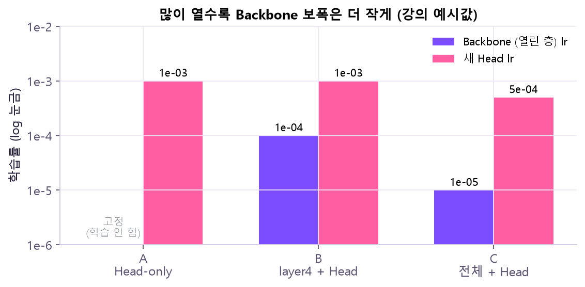
| 전략 (설명용 소형 모델) | 학습 파라미터 | 총 파라미터 | 비율 |
|---|---|---|---|
| Head-only | 99 | 6,131 | 1.6% |
| Partial FT | 4,739 | 6,131 | 77.3% |
| Scratch / Full | 6,131 | 6,131 | 100% |
lr과 epoch: lr은 보폭, epoch는 학습 예산. lr이 너무 작으면 정해진 epoch 안에 덜 배우고, 너무 크면 초반 loss가 튀어요. 그리고 마지막 epoch가 가장 좋은 epoch는 아니라서 valid loss가 가장 낮았던 순간(best)을 따로 저장해 둡니다.
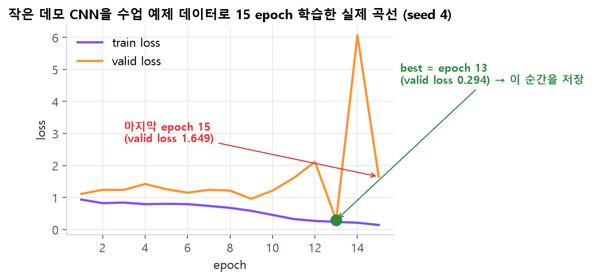
deepcopy해 두었다가 마지막에 되돌려요.{"params": model.layer4.parameters(), "lr": 1e-4}, # Backbone: 작게
{"params": model.fc.parameters(), "lr": 1e-3}, # 새 Head: 크게best_loss, best_state = valid_loss, copy.deepcopy(model.state_dict())
model.load_state_dict(best_state) # best로 되돌리기④ 클래스 불균형 — 적은 클래스를 포기하지 않게
train이 circle 120 · square 40 · triangle 20장이라면, 모델이 전부 circle이라고만 해도 Accuracy는 120/180 ≈ 66.7%나 돼요. 하지만 triangle은 하나도 못 찾죠. 전체 점수만 보면 이 실패가 안 보여요.
| 방법 | 바꾸는 것 | 장점 | 주의점 |
|---|---|---|---|
| Class weight | Loss 기여도 (배점) | 구현이 단순 | 가중치가 너무 크면 불안정 |
| Weighted sampler | Batch에 뽑히는 빈도 (출제 빈도) | 소수 클래스를 더 자주 학습 | 같은 샘플 중복 추출·확률 기록 필요 |
| 데이터 수집·증강 | 학습 자료 범위 | 데이터 범위 보완 | 라벨 의미·편향 검증 필요 |
| Threshold·후처리 | 운영 판단 규칙 | 업무 비용 반영 | 다중 클래스·확률 보정 고려 |
| 클래스 | 개수 | class weight (평균 1) | Sampler로 뽑힐 확률 (클래스 합) |
|---|
nn.CrossEntropyLoss(weight=) 명령어 사전에서 자세히 →class_weight = counts.sum() / counts # 적을수록 큼 (역빈도)
loss_fn = nn.CrossEntropyLoss(weight=class_weight.to(device))WeightedRandomSampler 명령어 사전에서 자세히 →sample_weight = class_weight[targets] # 클래스 weight → 샘플별 weight로 바꿈
sampler = WeightedRandomSampler(sample_weight, num_samples=len(sample_weight), replacement=True)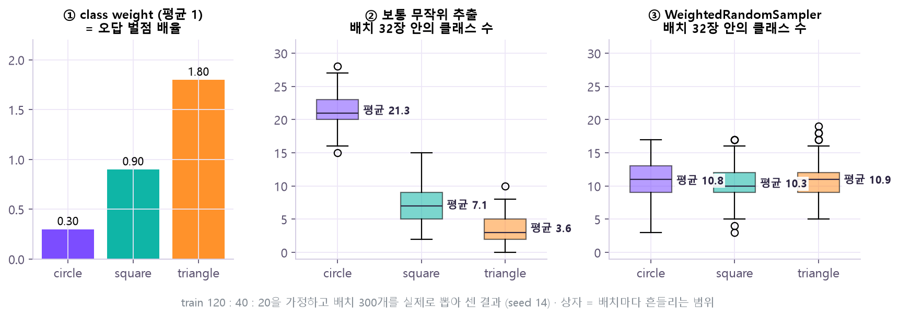
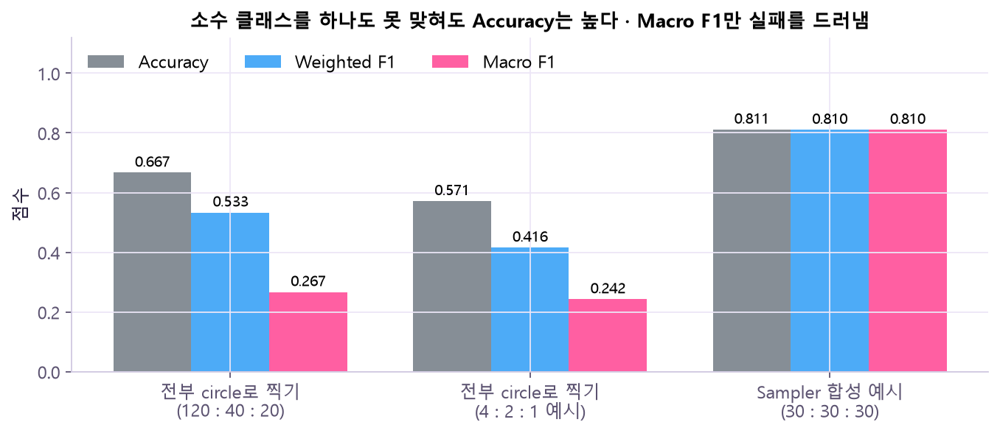
⑤ 평가와 오류 분석 — 어디서, 왜 틀렸나?
Confusion Matrix (혼동 행렬)
행 = 실제, 열 = 예측. 대각선이 맞힌 것이고, 대각선 밖이 "무엇을 무엇으로 헷갈렸나"예요.
| 실제 ＼ 예측 | circle | square | triangle |
|---|---|---|---|
| circle | 30 | 0 | 0 |
| square | 8 | 22 | 0 |
| triangle | 5 | 4 | 21 |
→ (Sampler 합성 예시) circle은 30/30을 찾았지만, triangle은 21/30만 찾았고 나머지는 circle·square로 착각했어요. Macro F1 ≈ 0.810.
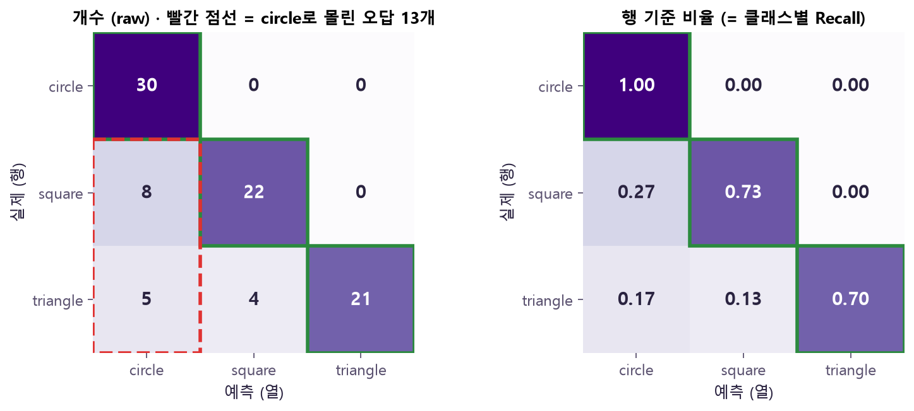
클래스별 지표
| 지표 | 공식 | 질문 |
|---|---|---|
| Precision | 그 클래스로 예측한 것 중 정답 비율 | 예측을 얼마나 믿을 수 있나? |
| Recall | 실제 그 클래스 중 찾아낸 비율 | 실제 대상을 얼마나 안 놓쳤나? |
| F1 | 2 × P × R / (P + R) — 조화평균 | P와 R을 한 숫자로 요약하면? |
| Support | 실제 그 클래스 표본 수 | 몇 장을 근거로 한 숫자인가? |
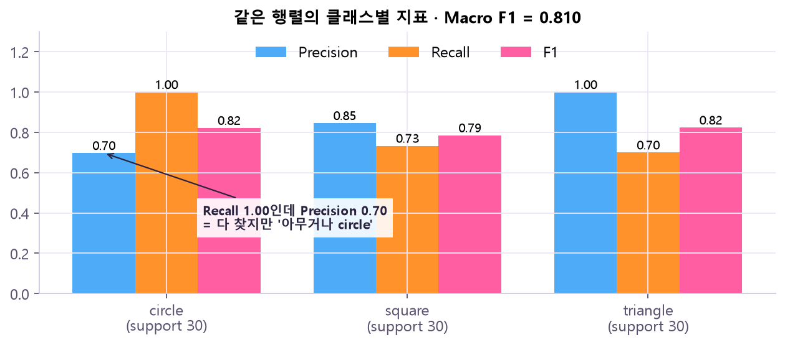
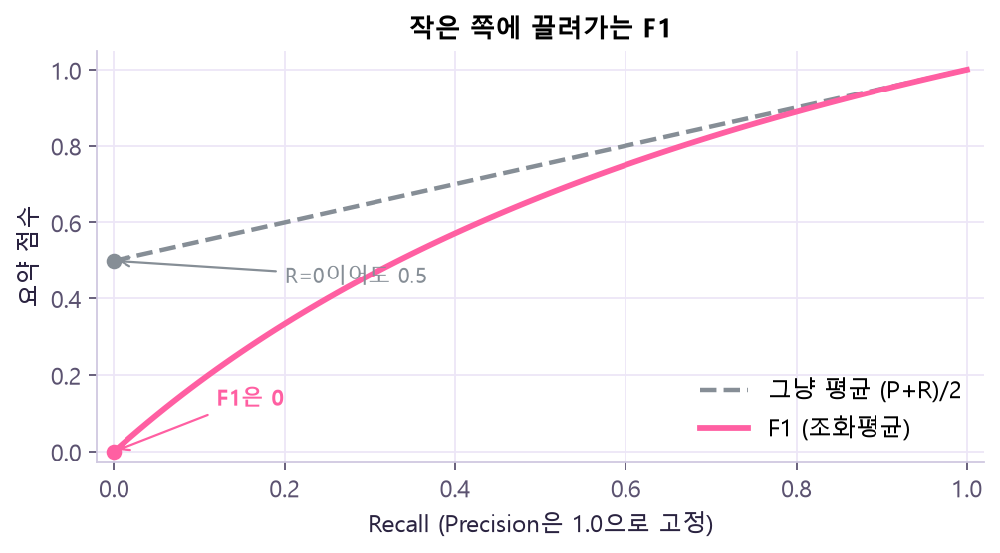
Macro vs Weighted 평균
| Macro | Weighted | |
|---|---|---|
| 계산 | 클래스별 F1의 단순 평균 | support(개수)를 가중치로 평균 |
| 소수 클래스 | 다른 클래스와 같은 비중 | 다수 클래스에 묻힘 |
| 언제 | 불균형 문제의 균형 확인 | 전체 분포 기준 요약 |
예) 실제 circle 4 · square 2 · triangle 1장, 모델은 전부 circle이라고 예측
Accuracy = 4/7 = 0.571 ← 절반 넘음?!
circle F1 = 0.727, square F1 = 0, triangle F1 = 0
Weighted F1 = 0.727 × 4/7 = 0.416
Macro F1 = (0.727 + 0 + 0) / 3 = 0.242 ← 실패가 드러남아래 칸의 숫자를 바꿔 보세요. 대각선 밖으로 옮길수록 Macro F1이 Accuracy보다 훨씬 빨리 떨어지는 걸 볼 수 있어요.
| 실제 ＼ 예측 | circle | square | triangle |
|---|---|---|---|
| circle | |||
| square | |||
| triangle |
| 클래스 | Precision | Recall | F1 | Support |
|---|
cm = confusion_matrix(y_true, y_pred, labels=labels)
print(f1_score(y_true, y_pred, average="macro"))오류를 원인 후보로 나누기
| 후보 | 예 |
|---|---|
| 데이터 부족 | 소수 클래스의 다양한 형태·배경·조명이 부족 |
| 도메인 차이 | 사전학습 표현과 지금 촬영 환경이 다름 |
| 라벨 문제 | 클래스 기준이 모호, 잘못된 라벨, 중복 |
| 모델 문제 | 입력 크기·증강·동결 범위·학습률이 안 맞음 |
conf, pred = probs.max(dim=1) # 가장 큰 확률과 그 클래스 = 예측
wrong = (pred != y_valid).nonzero().flatten()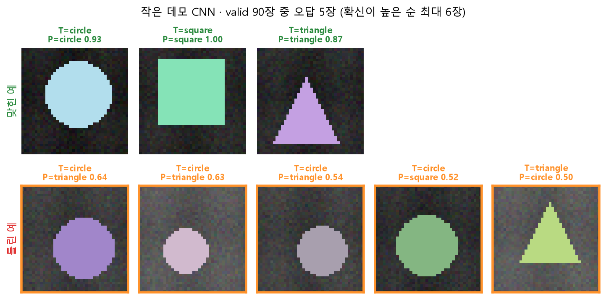
⑥ Grad-CAM — 모델은 어디에 반응했나?
Grad-CAM은 "이 클래스 점수에 사진의 어느 부분이 기여했나"를 열지도(Heatmap)로 보여 줘요. 모델이 물체가 아니라 배경·테두리·글자·촬영 위치 같은 엉뚱한 곳에 기대는지(편향) 찾는 단서가 됩니다.
Logit 선택→ 마지막 Conv
Feature Map으로 미분→ Gradient 공간 평균
= 채널별 중요도→ 가중합 → ReLU→ 입력 크기로 확대
원본에 겹치기
α_k = 채널 k의 gradient를 가로·세로로 평균 ← 채널 k가 이 클래스에 얼마나 중요한가
CAM = ReLU( Σ_k α_k × FeatureMap_k ) ← 점수를 "올린" 곳만 남김| 대상 층 | 장점 | 단점 |
|---|---|---|
| 깊은 Conv 층 (보통 마지막 Conv block) | 클래스 의미가 강함 | 공간 해상도가 낮음 (흐릿) |
| 얕은 Conv 층 | 가장자리·질감 해상도 높음 | 클래스 구분력 상대적으로 약함 |
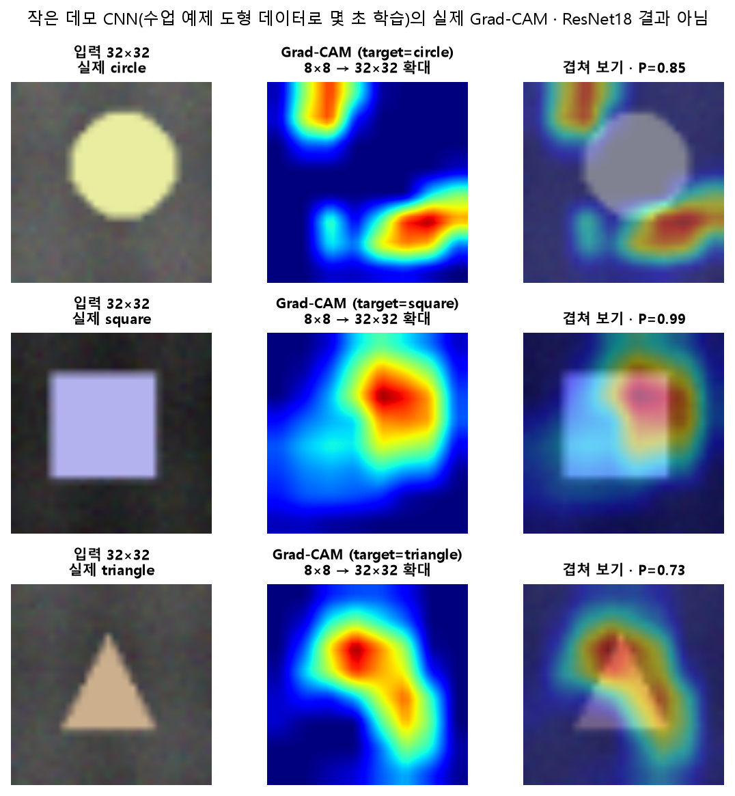
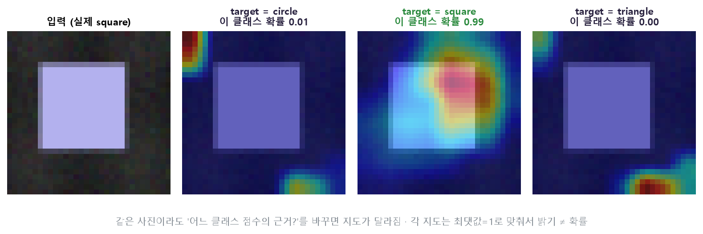
- 해상도가 낮고, 고른 층·클래스·정규화 방식에 따라 결과가 달라진다.
- 강한 색이 반드시 사람에게 의미 있는 물체 부분은 아니다 → 인과 설명이 아니라 모델 의존성의 단서.
- 그래서 해당 영역을 가리거나 바꾼 입력(Occlusion·Counterfactual)으로 점수가 실제로 바뀌는지, 데이터 Slice별 지표와 같이 확인한다.
- Grad-CAM은 분석용 gradient만 쓴다.
optimizer.step()으로 모델을 바꾸는 단계가 아니다.
handles.append(target_layer.register_forward_hook(save_act))
handles.append(output.register_hook(save_grad)) # 이 텐서의 gradient도 기록alpha = grads.mean(dim=(1, 2)) # 채널별 중요도
cam = torch.relu((alpha[:, None, None] * acts).sum(0))⑦ 비교 · 저장 · 재현 — 다른 사람도 같은 결과를 얻나?
| 고정할 조건 | 기록할 변경 |
|---|---|
| 분할 · 클래스 매핑 | Weight · 시작 checkpoint |
| 평가 입력 · 주 지표 | 학습 범위 · 학습률 · 학습량(epoch) |
| 비교 기준 (valid로 선택, test로 최종 확인) | BN 정책 · Loss · Sampler · seed |
주 지표는 Macro F1, 보조 지표는 Accuracy·클래스별 Recall·시간·학습 파라미터 수. 후보 선택 규칙(예: Macro F1 → valid loss 순)도 미리 정하고, 결과를 본 뒤 기준을 바꾸지 않아요. 순차 학습(Head-only → Partial)이면 앞 단계의 학습량도 기록해요.
torch.manual_seed(14) # 맨 앞에서 무작위 시작값 고정
torch.save({"weights": best_state, "classes": train_set.classes,
"lr": 0.01, "epochs": 8, "seed": 14, "test_used": False}, "model.pt")
saved = torch.load("model.pt", map_location="cpu", weights_only=True)
model.load_state_dict(saved["weights"]); model.eval()| 명령어 / 인자 | 뜻 | 바꾸면? |
|---|---|---|
torch.manual_seed(n) | 무작위 시작값 고정 | seed만 바꿔도 결과가 꽤 흔들림 → 한 번 결과로 결론 내지 않고 seed를 바꿔 여러 번 확인 |
torch.save(dict, path) | 가중치 + 만든 방법(클래스·lr·epoch·seed·test 사용 여부)을 함께 저장 | 가중치만 저장하면 다시 만들 수도, 클래스 번호를 해석할 수도 없음 |
map_location="cpu" | GPU에서 저장한 걸 CPU로 불러오기 | 빼면 GPU가 없는 컴퓨터에서 에러 |
weights_only=True | 텐서 같은 안전한 값만 불러옴 | False면 파일 안의 임의 코드가 실행될 수 있음 → 믿을 수 없는 checkpoint는 torch.load 하지 않기 |
| 상황 | 기대 결과 | 확인 근거 |
|---|---|---|
| 정상 3클래스 폴더 | Batch·라벨·학습 정상 | class_to_idx · Shape |
| minority 1장 | 지표 계산 가능, 경고 기록 | support · zero_division |
| train/test 중복 | 실행 전 감사 실패 | 파일 / 지각 해시 |
| Weight 미준비 | 명확한 안내 후 중단 | 임의 random weight 대체 금지 |
| 저장 모델 복원 | 동일 입력 Logit이 허용 오차 안에서 일치 | classes · transform · state_dict |
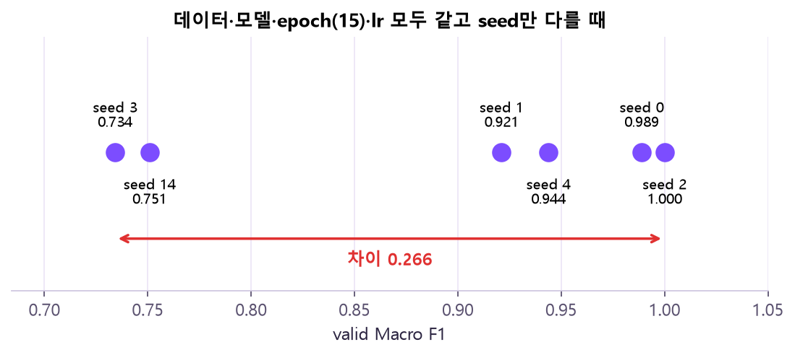
torch.manual_seed만 바꿔 6번 학습한 실제 결과예요. valid Macro F1이 seed 3은 0.734, seed 2는 1.000 — 0.266이나 차이 나요. 🤔 왜? seed는 첫 가중치와 배치 순서를 정해요. 데이터가 작고 epoch가 짧으면 출발점·순서 운이 결과를 크게 흔들어요. 그래서 "A 설정이 B보다 0.05 좋다"는 결론은 seed 하나로 내리면 안 되고, 여러 seed의 범위를 비교하거나 seed를 고정·기록해 같은 조건에서 비교해요.원본 자료
- 강의:
Day14_20261105.pdf(p.2–11 큰 그림, p.17–26 데이터셋, p.27–46 전이학습·Fine-tuning, p.47–58 불균형, p.59–68 평가·오류, p.69–79 Grad-CAM, p.80–99 비교·프로젝트·Weight 점검) - 요약:
Day14_oneday요약.pdf(대표 코드 흐름, 파라미터별 변화) - 공식 문서: Torchvision Models (resnet18 · Weights · transforms) · ImageFolder
- 공식 문서: CrossEntropyLoss · WeightedRandomSampler
- 공식 문서: scikit-learn classification_report · 논문: Selvaraju et al., Grad-CAM, ICCV 2017